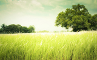

Наша планета
Пересуваючись по нашій планеті, починаєш відчувати себе живим і повним сил, а повертаючись до роботи - голова кипить від думок і нових ідей. Нові місця і створені самою природою шедеври надихають і допомагають втекти від повсякденної рутини. Достатньо взяти тиждень-другий відпустки і просто їздити, дивитися і слухати. А якщо немає можливості помандрувати наживо, можна зробити віртуальну екскурсію по красивих місцях на нашій планеті. Традиційно для відвідування туристи вибирають найбільш розпіарені місця. А менш відомі або важкодоступні природні та архітектурні пам'ятки відвідують лише одиниці. Хоча в деяких з них неодмінно варто побувати хоча б раз у житті.